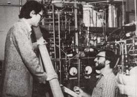

Scientists are perfecting a new type of heat pump that may be ideal for use with solar energy.
It's probably fair to say that most of us consider heat pumps to be pretty mysterious devices. Somehow or other they manage to pull heat from outside air that should be too cold to keep us warm; or, at the flip of a switch, they take heat out of indoor air and keep us cool. To add to the mystery, heat pumps have a performance rating, called a coefficient of performance (COP), that is greater than onesuggesting that there is a free lunch, after all.
Of course, it isn't true. Heat pumps don't create energy; they take advantage of a fact that Lord Kelvin (as in "Kelvinator") figured out about a century ago: Anything that's at a temperature higher than absolute zero (0 Kelvin, -273'Celsius, or -460° Fahrenheit) has heat . . . and if you can put something cooler next to it, that heat will be transferred. Additionally, the fact that liquids absorb heat when they vaporize and give up heat when they condense allows more heat to be transferred. Therefore, heat pumps deliver more energy than they use, simply because they take advantage of the heat that's present in air (or water, earth, or whatever medium in which the evaporator is placed).
Today most heat pumps-whether they're used to warm buildings, to cool buildings, or to refrigerate food-employ a compressor to increase the pressure and temperature of the working fluid, thereby effecting heat transfer, vaporization, and condensation. But another system, one known as the absorption cy cle, has also been used where electricity is unavailable to run a compressor motor. These devices are similar to the compressor type but use heat directly to raise temperature and pressure. Absorption refrigerators were widespread before electricity came to remote areas of the U.S. and are still used in recreational vehicles and at remote sites.
For obvious reasons, the absorption cycle lends itself well to solar-thermal energy. Converting the heat output of a solar panel into rotating motion (to spin a compressor) would be a complicated and expensive procedure; an absorption-cycle heat pump, however, has no moving parts and requires only heat at fairly low temperatures to operate. Technicians have been working on solar-driven absorption-cycle heat pumps for over a decade, but the hang-up has been that the best COP's have only been about 0.7, requiring a singledwelling collector area of 600 to 700 square feet . . . a prohibitive amount.
One of the people who was caught long ago by the allure of the absorption cycle is Kim Dao, a mechanical engineer at Lawrence Berkeley Laboratories. In 1975, Dr. Dao began attempting to improve the performance of the home-scale, conventional absorptioncycle heat pump. After a good many years of frustration, he and his coworkers-Rollin Armer, Joseph Rasson, and Michael Wahlig -recognized that attempting to make incremental improvements in the conventional heat pumps simply wasn't going to take them where they wanted to go: to COP's of better than one.
Dao decided to break away from the standard practice of maintaining a constant pressure and varying temperatures on the boiler side of the apparatus. By taking the opposite approachvarying the pressure to maintain a constant temperature-the research team has developed a prototype that has actually achieved a COP of 1.5. The present device adds a "topping cycle" to a conventional heat pump, but the next step (which they're starting work on this fall) will be a single-effect system of their own design . . . one that Dao estimates will reach a COP of at least 1.7. At that stage, the device will be achieving over 7007o of the maximum possible performance of an absorption heat pump.
If and when the regenerative absorptioncycle heat pump reaches the marketplace-a process which Dao estimates will take six to ten years-it could revolutionize the way we heat and cool our homes. The device, when coupled to about 300 square feet of concentrating solar-thermal collectors, would be 50 to 7007o more efficient for heating than the solar energy alone, and would be 5007o more efficient than a compressor-driven heat pump in either a heating or a cooling mode. In terms of energy delivered compared with energy consumed, a conventional compressor-driven heat pump takes 100 Btu from a power plant and yields 164 Btu into a home when the outdoor temperature is 37°F. (In comparison, a resistance heater delivers 35 Btu at the same expense of energy.) Dao's single-effect heat pump, however, could yield 237 Btu at the same outside temperature.
Though solar energy is likely to be one of the most popular heat sources for the new absorption-cycle heat pump, the design is equally well suited to cogeneration systems using waste heat or geothermal heat sources. In fact, any thermal energy source of 300°F or greater will work, though a lower temperature source can be augmented to achieve that temperature.
As noted above, however, it's going to be a few years before the regenerative absorptioncycle heat pump reaches commercial development. After nine years of work, Dao estimates that he and his coworkers still have three to four years of tinkering left before the pumping cycles in the single-effect device are perfected; the concept is proven, but the niggling engineering details are yet to be worked out to the scientists' satisfaction. When they're finished, it's likely that the U.S. government, which finances the project, will license the patents to commercial interests. And then a solar-driven regenerative heat pump could be the choice for efficient home heating and cooling.
|
 After ten years of development, the regenerative absorption-cycle heat pump shoes promise of revoluntinizing the way we heat our homes. Left: Kim Dao, project director; right: Joseph Rasson. |
|
|